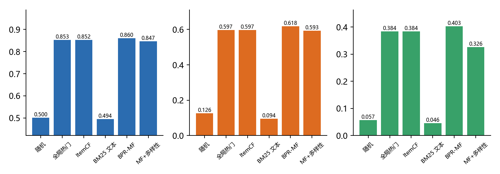
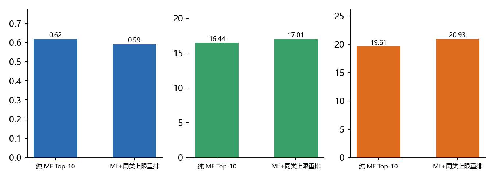
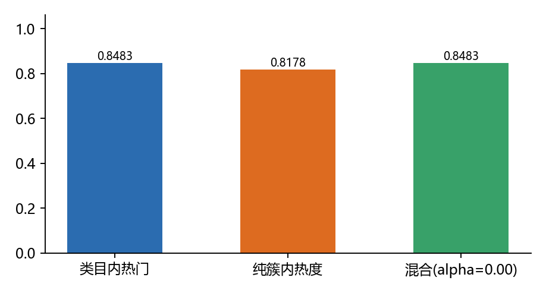
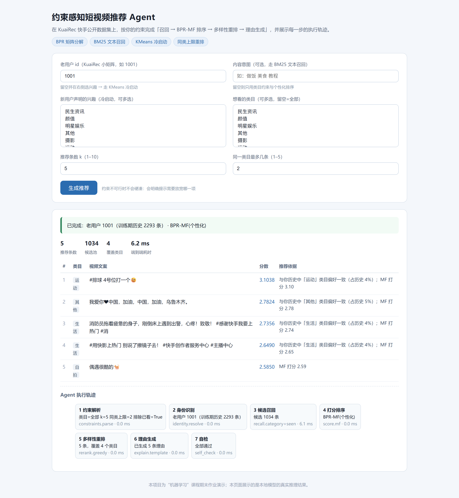
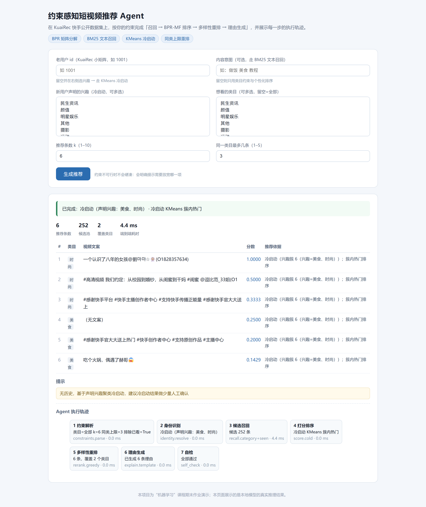

在线试用
本页不含后端：模型参数（1411×32 与 3327×32 的隐向量）已从训练产物导出，打分、过滤、重排全部在你的浏览器里完成。BM25 文本意图与 K-Means 冷启动需要本地 Python 版。
实验结果（用户内 10% 留出，1411 用户）
完整评估见仓库 results/eval_summary.json，每个数字都可由脚本重跑。
| 排序器 | AUC | HR@10 | NDCG@10 | 目录覆盖率 |
|---|---|---|---|---|
| 随机 | 0.500 | 12.6% | 5.7% | 94.3% |
| 全局热门 | 0.853 | 59.7% | 38.4% | 5.4% |
| ItemCF | 0.852 | 59.7% | 38.4% | 5.7% |
| BM25 文本 | 0.494 | 9.4% | 4.6% | 74.5% |
| BPR-MF | 0.860 | 61.8% | 40.3% | 16.4% |
| BPR-MF + 同类上限重排 | 0.847 | 59.3% | 32.6% | 17.0% |
同类上限重排把推荐类目覆盖从 7.45 提升到 7.95（+6.7%），代价是 HR@10 下降 4.1%——这是我们在“多样性 vs 准确率”上的显式取舍。BM25 与 K-Means 冷启动的对照实验为负结果，已在报告中如实记录。



本地运行完整版
完整版包含 BM25 文本意图、K-Means 冷启动、七步执行轨迹与 16 项自测，纯 CPU、约 4 分钟可复现。
git clone https://github.com/Cheetea555/kuairec-constrained-rec-agent.git
cd kuairec-constrained-rec-agent
pip install -r requirements.txt
python scripts/download_data.py # 约 630MB parquet
python scripts/prepare_all.py
python scripts/train_all.py
python scripts/evaluate.py
python web/app.py # http://127.0.0.1:5000
